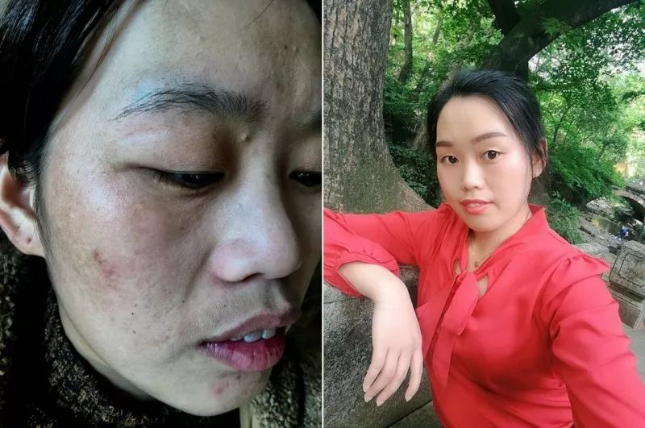
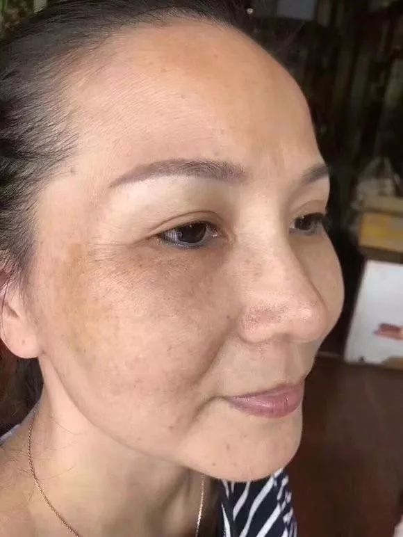
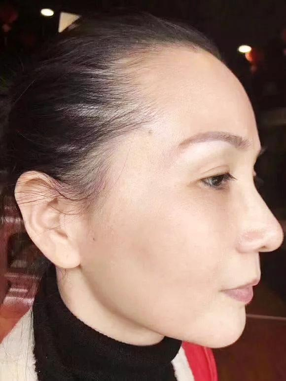
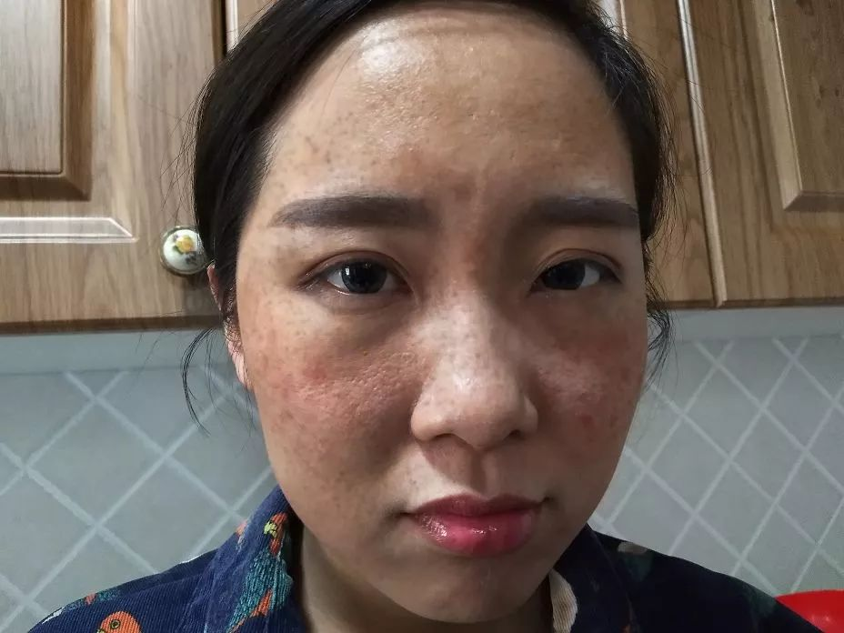

【精品贴】祛斑方法大揭秘，43岁大婶坚持用，皮肤又白又嫩，老公直呼认不出！
出差许久的老公看到她，惊得张大嘴巴；走在街上，总有帅哥跟在屁股后面要微信；去学校看望儿子，却被误认成姐姐......老公因此吃不好睡不好，说自己和她站在一起像父女，形象落差太大，一点安全 感都没有。这是刚刚发生在广东佛山市周霞身上的真人真事儿。科学有效祛斑，我为苏慧老师代言（她的微信： 长按微信号复制，打开微信添加好友)
这是两天前周霞传来的照片,脸上一颗斑点都没有，捕捉不到半点粗糙暗沉的影子，就连毛孔都看不出来，全脸零瑕疵，青春逼人! 你能看出这是一位儿子已经上大学的中年妇女吗？
可就在3个月前，周霞还是下面这副模样
面对丈夫的指责，周霞忍不住大笑，说：“我怎么舍得去美容店，费用那么高，咱的钱我还留着给儿子娶媳妇买房子呢。再说谁整容脸不红不肿的？其实我皮肤变得这么好，全靠苏慧”。
看老公一脸疑惑，周霞解释道：“我发小玉萍之前也是满脸斑，后来她女儿给她找了一位叫苏慧的护肤老师 微信： ，老师根据她的情况教了她一个祛斑的法子，用了两三个月不仅斑没了，皮肤还越来越好了。她看我这几年皮肤越来越差，就让我也试试。”  “刚开始我也不太信，但从网上一查发现确实有好多人的色斑和皮肤问题都是被苏慧老师解决的。我想着多听听专家的建议也没啥没坏处，万一真有用呢。结果按老师教 的方法试了两个星期，斑点就有淡化的痕迹，脸也没那么干了；又用了一个多月，现在整个脸一点斑都没有了，白了不少！皮肤好了，什么都好了！”
“苏慧老师这法子真是神了！我VE、VC没少吃，面膜也没少敷，一周一次美容院，也没去掉的斑，现在几乎没花什么钱却全没了，皮肤还越来越好了。你看我这皮肤通透白亮了好几成，真是比年轻那会儿还好！”周霞兴奋地说。
女人肌肤白嫩至少减龄 10 岁
在对苏慧老师帮助过的10000名受益者的回访中： 98.7% 的人表示，坚持使用苏慧的祛斑方法1个月，色斑明显淡化，皮肤变得白嫩细滑。 “逆生长”现象比比皆是。雀斑、日晒斑、黄褐斑、辐射斑
42岁的文敏是上海一家传媒公司销售总监，每天跟客户打交道，好形象等同于无形的职业资格证书。为此文敏不惜重金买大牌化妆品，去美容院，在相当长一段时间， 文敏看起来确实比同龄人年轻。可随着年龄增长和工作压力的增加，脸上的色斑、皱纹越长越多，一下子老了十几岁。用了很多昂贵的护肤品和护肤方法，都无济于 事。
在一个客户的推荐下找到了苏慧，按老师教她的方法用了2个月，脸上的色斑明显变浅，皮肤透亮好几度。看到效果后一直坚持使用，肌肤越来越白皙水嫩。半年用下来，不但脸上找不出一个斑点，连眼角皱纹都完全消失了，老公都说她看上去比刚结婚那会儿还漂亮。
斑点、细纹、粗糙暗黄、大毛孔
统统拿下
佳佳28岁生完孩子，各种肌肤问题开始“趁虚而入”。眼袋黑眼圈，皮肤干燥起皮，还出现了很多小细纹和斑点，鼻翼两侧毛孔粗大，肤质粗糙暗哑，看起来比实际年龄老10岁。不抹粉不敢出门，抹上粉脸颊、鼻头严重卡粉，特别难看。
等到孩子上小学后，佳佳开始找工作，可因为形象问题，屡次碰壁。有一次面试中，面试官突然问她：公司缺少一名保洁员，问她要不要考虑。佳佳当时就崩溃了。
后来从一档知名护肤节目上知道了苏慧，按老师教的日常护肤技巧，每天精心护理自己的肌肤。一个月后肌肤焕然一新，色斑没了，粗糙平了，暗黄褪了，皮肤越来越饱满水嫩。坚持到3个月的时候，脸上瑕疵统统不见了，除了嫩就是白。很快就被一家地产公司选中做销售顾问，月入过万。
男人不一定会感激一个为了家庭而容颜渐衰的妻子，却一定不会拒绝一个时刻光鲜靓丽的女人！ 所以不管30岁、40岁、50岁，我们一定要好好宠爱自己。
女人最好的状态，就是眼里写满故事，脸上却不见风霜。 时间带给我们的，应该是数若珍宝的回忆，而不是一片片斑点、一声声黄脸婆,带来的绝望！